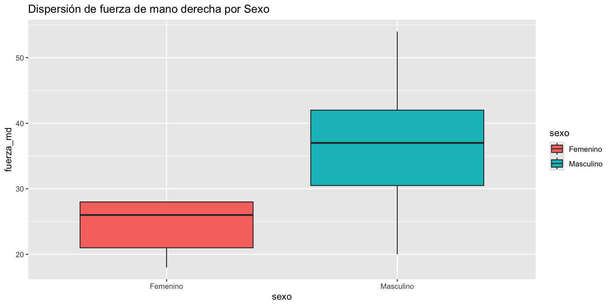
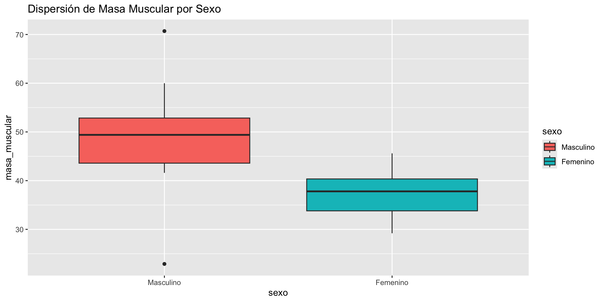
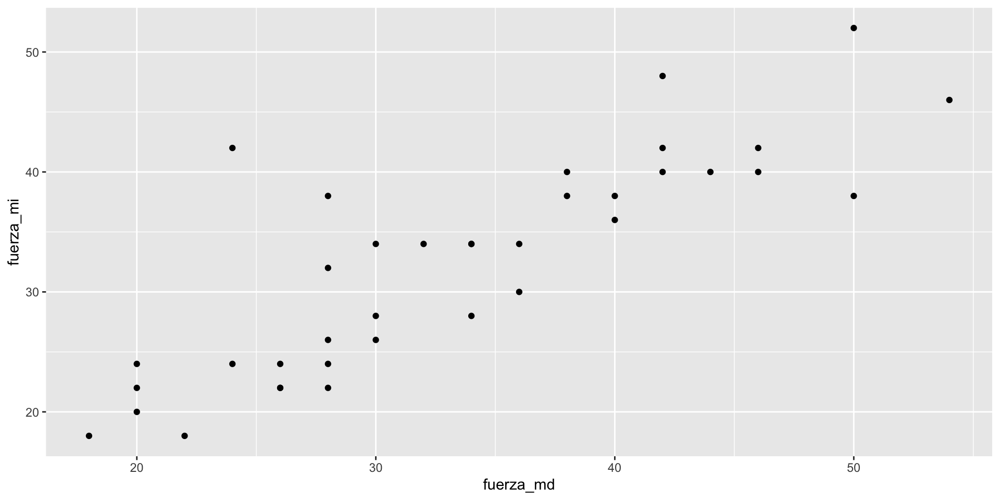
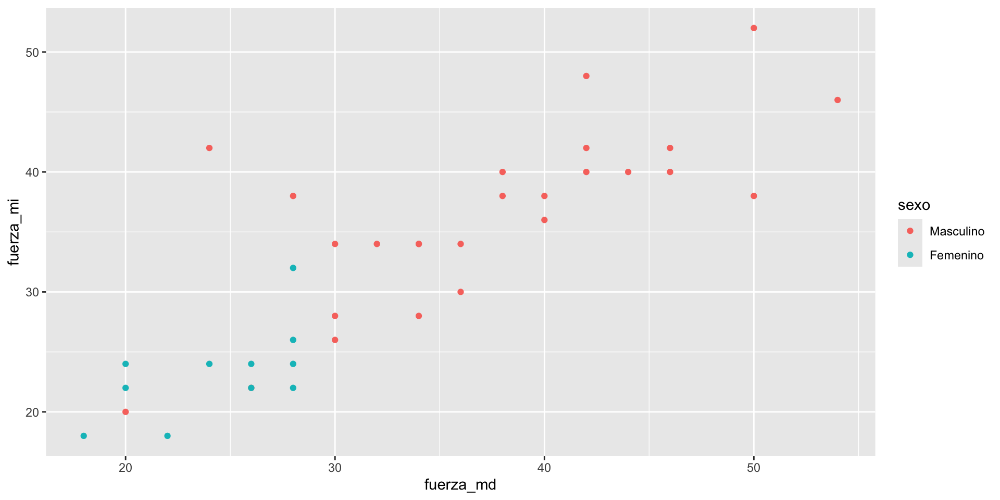
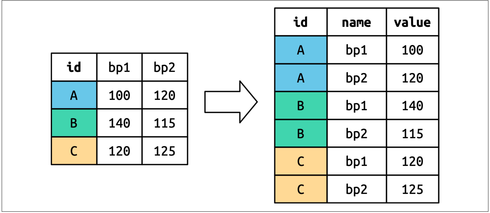
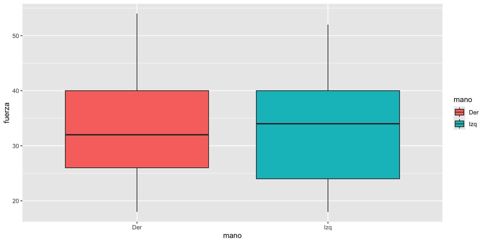

Datos de fisiología del ejercicio
Pruebas de hipótesis e intervalos de confianza
![]()
Objetivo general
Objetivo
Llevar a cabo pruebas de hipótesis y estimación por intervalo con R base y tidyverse, usando los datos de fisiología del ejercicio.
Lectura de los datos.
Directorio de trababjo
- Verificamos cuál es el directorio actual.
[1] "/Users/unicordoba/Documents/Cursos/Laboratorio"- Fijamos el directorio de trabajo.
Cargamos tidyverse
Lectura de los datos
Verificación de lectura.
summary
edad sexo fcr presion_sis
Min. :17.0 Femenino :11 Min. : 54.00 Min. : 93.0
1st Qu.:18.0 Masculino:26 1st Qu.: 74.00 1st Qu.:110.0
Median :18.0 Median : 79.00 Median :122.0
Mean :19.7 Mean : 81.95 Mean :120.8
3rd Qu.:19.0 3rd Qu.: 88.00 3rd Qu.:129.0
Max. :60.0 Max. :117.00 Max. :162.0
presion_dia estatura masa_corporal cintura
Min. : 33.00 Min. :155.2 Min. : 1.80 Min. : 56.40
1st Qu.: 66.00 1st Qu.:160.8 1st Qu.:51.70 1st Qu.: 69.60
Median : 71.00 Median :167.5 Median :62.60 Median : 73.00
Mean : 71.49 Mean :168.5 Mean :62.03 Mean : 90.89
3rd Qu.: 78.00 3rd Qu.:175.5 3rd Qu.:70.00 3rd Qu.: 82.00
Max. :102.00 Max. :189.5 Max. :97.00 Max. :686.00
imc masa_grasa masa_muscular masa_osea
Min. :16.80 Min. :10.40 Min. :22.90 Min. :1.300
1st Qu.:19.50 1st Qu.:16.50 1st Qu.:41.60 1st Qu.:2.300
Median :21.10 Median :23.80 Median :44.45 Median :2.500
Mean :22.31 Mean :23.51 Mean :45.39 Mean :2.492
3rd Qu.:24.70 3rd Qu.:27.60 3rd Qu.:50.50 3rd Qu.:2.700
Max. :33.50 Max. :53.80 Max. :70.70 Max. :3.700
grasa_visceral fuerza_md fuerza_mi
Min. : 1.000 Min. :18.00 Min. :18.00
1st Qu.: 1.000 1st Qu.:26.00 1st Qu.:24.00
Median : 1.250 Median :32.00 Median :34.00
Mean : 2.723 Mean :33.35 Mean :32.43
3rd Qu.: 3.000 3rd Qu.:40.00 3rd Qu.:40.00
Max. :13.000 Max. :54.00 Max. :52.00 Verificación de lectura.
glimpse
Rows: 37
Columns: 15
$ edad <int> 24, 18, 19, 19, 18, 18, 18, 20, 18, 19, 20, 18, 19, 17,…
$ sexo <fct> Femenino, Masculino, Masculino, Masculino, Femenino, Fe…
$ fcr <int> 85, 75, 72, 88, 74, 78, 112, 78, 54, 85, 77, 74, 68, 83…
$ presion_sis <int> 122, 125, 113, 108, 110, 105, 137, 118, 124, 135, 108, …
$ presion_dia <int> 90, 82, 69, 71, 70, 67, 33, 46, 82, 64, 70, 64, 61, 61,…
$ estatura <dbl> 156.4, 182.0, 166.0, 180.5, 157.5, 156.6, 172.3, 164.5,…
$ masa_corporal <dbl> 60.3, 90.7, 54.3, 69.0, 52.0, 55.2, 67.3, 51.5, 66.0, 7…
$ cintura <dbl> 73.4, 89.4, 70.5, 73.0, 67.8, 70.0, 79.0, 68.0, 73.9, 8…
$ imc <dbl> 24.7, 27.4, 19.8, 21.2, 21.0, 22.5, 22.7, 19.1, 20.1, 2…
$ masa_grasa <dbl> 32.8, 25.2, 15.9, 17.8, 30.6, 27.6, 19.4, 14.4, 23.8, 2…
$ masa_muscular <dbl> 38.40, 22.90, 43.30, 53.90, 34.20, 38.00, 51.50, 41.80,…
$ masa_osea <dbl> 2.1, 3.4, 2.3, 2.9, 1.9, 2.0, 2.7, 2.3, 2.6, 2.7, 2.7, …
$ grasa_visceral <dbl> 3.00, 6.00, 1.00, 2.00, 1.00, 1.00, 2.50, 1.00, 1.00, 5…
$ fuerza_md <int> 28, 32, 30, 38, 24, 28, 40, 36, 42, 42, 40, 20, 50, 34,…
$ fuerza_mi <int> 26, 34, 28, 40, 24, 22, 36, 34, 42, 48, 38, 20, 38, 34,…Pregunta a responder
Importante
Hipótesis: La fuerza prensil promedio de la mano derecha es mayor en hombres que en mujeres.
Visualización previa

Conclusiones
Se sospecha que:
Hay diferencia en los promedios, dado que en el boxplot la caja de los hombres está mas arriba.
Las varianzas son distintas, lo cual se evidencia porque la caja de los hombres es más larga que la de las mujeres.
Estadísticas por sexo
Calculemos ahora la media, la varianza y el error estándar de la media, desagregado por sexo.
# A tibble: 2 × 4
sexo N Media Var
<fct> <int> <dbl> <dbl>
1 Femenino 11 24.364 14.255
2 Masculino 26 37.154 71.735Error estándar de la media
Si no tenemos una función en el paquete base, la escribimos
# A tibble: 2 × 5
sexo N Media Var Ee
<fct> <int> <dbl> <dbl> <dbl>
1 Femenino 11 24.364 14.255 1.1384
2 Masculino 26 37.154 71.735 1.6610Error estándar de la media II
Sin usar la función
# A tibble: 2 × 5
sexo N Media Sd ee
<fct> <int> <dbl> <dbl> <dbl>
1 Femenino 11 24.364 3.7755 1.1384
2 Masculino 26 37.154 8.4697 1.6610Hipótesis sobre igualdad de varianzas.
Prueba de igualdad de varianzas
Advertencia
Antes de probar la hipótesis con respecto a la media, debemos probar si se cumple el supuesto de varianzas iguales.
Probaremos la hipótesis \[H_0:\sigma^2_m=\sigma^2_f\] con una prueba \(F\), implementada en la función var.test.
Uso de var.test
F test to compare two variances
data: fuerza_md by sexo
F = 0.19871, num df = 10, denom df = 25, p-value = 0.01098
alternative hypothesis: true ratio of variances is not equal to 1
95 percent confidence interval:
0.07603316 0.66659195
sample estimates:
ratio of variances
0.1987101 Organizar la salida en un df
# A tibble: 1 × 9
estimate num.df den.df statistic p.value conf.low conf.high method
<dbl> <int> <int> <dbl> <dbl> <dbl> <dbl> <chr>
1 0.19871 10 25 0.19871 0.010982 0.076033 0.66659 F test to compar…
# ℹ 1 more variable: alternative <chr>Hipótesis sobre igualdad de medias, varianzas distintas
Prueba de la hipótesis
Prueba T de Welch var.equal = FALSE por defecto en R, cuando se usa t.test
Probaremos la hipótesis \[H_0: \mu_m=\mu_f \\ H_1: \mu_m>\mu_f\]
Prueba de la hipótesis
Welch Two Sample t-test
data: fuerza_md by sexo
t = -6.3516, df = 34.804, p-value = 1
alternative hypothesis: true difference in means between group Femenino and group Masculino is greater than 0
95 percent confidence interval:
-16.19299 Inf
sample estimates:
mean in group Femenino mean in group Masculino
24.36364 37.15385 Guardando resultados como tabla
# A tibble: 1 × 10
estimate estimate1 estimate2 statistic p.value parameter conf.low conf.high
<dbl> <dbl> <dbl> <dbl> <dbl> <dbl> <dbl> <dbl>
1 -12.790 24.364 37.154 -6.3516 1.0000 34.804 -16.193 Inf
# ℹ 2 more variables: method <chr>, alternative <chr>¿Qué se concluye?
Precaución
No se rechaza la hipótesis nula porque el valor p es mayor que 0.05
Ojo
Advertencia
La conclusión anterior no es correcta, porque la diferencia de media se está calculando al revés
Prueba de la hipótesis, alternativa correcta
Welch Two Sample t-test
data: fuerza_md by sexo
t = -6.3516, df = 34.804, p-value = 1.365e-07
alternative hypothesis: true difference in means between group Femenino and group Masculino is less than 0
95 percent confidence interval:
-Inf -9.387426
sample estimates:
mean in group Femenino mean in group Masculino
24.36364 37.15385 Nivel de referencia de un factor.
Nivel de referencia
[1] "Femenino" "Masculino"[1] "Masculino" "Femenino" Repetimos la prueba
Welch Two Sample t-test
data: fuerza_md by sexo
t = 6.3516, df = 34.804, p-value = 1.365e-07
alternative hypothesis: true difference in means between group Masculino and group Femenino is greater than 0
95 percent confidence interval:
9.387426 Inf
sample estimates:
mean in group Masculino mean in group Femenino
37.15385 24.36364 Repetimos la prueba (guardar)
# A tibble: 1 × 10
estimate estimate1 estimate2 statistic p.value parameter conf.low conf.high
<dbl> <dbl> <dbl> <dbl> <dbl> <dbl> <dbl> <dbl>
1 12.790 37.154 24.364 6.3516 1.3650e-7 34.804 9.3874 Inf
# ℹ 2 more variables: method <chr>, alternative <chr>Hipótesis sobre la diferencia de medias, varianzas iguales.
Pregunta a responder
Importante
Hipótesis: La masa muscular promedio es mayor en hombres que en mujeres.
Visualización previa

Conclusiones
Se sospecha que:
Hay diferencia en los promedios, dado que en el boxplot la caja de los hombres está mas arriba.
Las varianzas prodrían ser distintas, lo cual se evidencia porque la caja de los hombres es más larga que la de las mujeres.
hay que hacer la prueba de hipótesis formal.
Estadísticas por sexo
Calculemos ahora la media, la varianza y el error estándar de la media, desagregado por sexo.
# A tibble: 2 × 4
sexo N Media Var
<fct> <int> <dbl> <dbl>
1 Masculino 26 48.785 78.011
2 Femenino 11 37.368 26.175Error estándar de la media
Si no tenemos una función en el paquete base, la escribimos
# A tibble: 2 × 5
sexo N Media Var Ee
<fct> <int> <dbl> <dbl> <dbl>
1 Masculino 26 48.785 78.011 0.33971
2 Femenino 11 37.368 26.175 0.46511Prueba de igualdad de varianzas
Advertencia
Antes de probar la hipótesis con respecto a la media, debemos probar si se cumple el supuesto de varianzas iguales.
Probaremos la hipótesis \[H_0:\sigma^2_m=\sigma^2_f\] con una prueba \(F\), implementada en la función var.test.
Uso de var.test
# A tibble: 1 × 9
estimate num.df den.df statistic p.value conf.low conf.high method
<dbl> <int> <int> <dbl> <dbl> <dbl> <dbl> <chr>
1 2.9803 25 10 2.9803 0.074964 0.88843 7.7890 F test to compar…
# ℹ 1 more variable: alternative <chr>Conclusión
Nota
a un nivel de significancia del 5% no se rechaza la hipótesis de igualdad de varianzas. Asumimos varianzas poblacionales iguales.
Prueba de la hipótesis
Prueba T con varianzas iguales, debemos indicar: var.equal =TRUE en la función t.test
Two Sample t-test
data: masa_muscular by sexo
t = 3.9926, df = 35, p-value = 0.0001595
alternative hypothesis: true difference in means between group Masculino and group Femenino is greater than 0
95 percent confidence interval:
6.585237 Inf
sample estimates:
mean in group Masculino mean in group Femenino
48.78462 37.36818 Prueba de la hipótesis
Prueba T con varianzas iguales, debemos indicar: var.equal =TRUE en la función t.test
# A tibble: 1 × 10
estimate estimate1 estimate2 statistic p.value parameter conf.low conf.high
<dbl> <dbl> <dbl> <dbl> <dbl> <dbl> <dbl> <dbl>
1 11.416 48.785 37.368 3.9926 0.00015949 35 6.5852 Inf
# ℹ 2 more variables: method <chr>, alternative <chr>Explicación al resultado
Masa Muscular por Sexo: Fisiológicamente, los hombres suelen tener no solo una media de masa muscular más alta, sino también una mayor variabilidad (dispersión) debido a factores hormonales y de actividad física diversa.
Prueba T pareada
Pregunta a responder
Importante
¿La fuerza prensil promedio de la mano derecha es igual a la de la mano izquierda?
Exploración gráfica
Graficamos los datos de fuerza prensil buscando visualizar la relación entre manos.
Graficamos los datos de fuerza prensil buscando visualizar la relación entre manos y diferenciando por sexo.
Gráfico de dispersaión

Exploración gráfica (diferenciamos por sexo)

Ejercicio

Solución
Transformacion de los datos
Como quedan los datos
# A tibble: 74 × 3
sexo mano fuerza
<fct> <fct> <int>
1 Femenino Der 28
2 Femenino Izq 26
3 Masculino Der 32
4 Masculino Izq 34
5 Masculino Der 30
6 Masculino Izq 28
7 Masculino Der 38
8 Masculino Izq 40
9 Femenino Der 24
10 Femenino Izq 24
# ℹ 64 more rowsComo trabaja pivot_longer

El gráfico

Descriptivas
# A tibble: 2 × 5
mano n Media Mediana Var
<fct> <int> <dbl> <int> <dbl>
1 Der 37 33.351 32 88.901
2 Izq 37 32.432 34 80.030Descriptivas por mano y sexo
# A tibble: 4 × 6
# Groups: sexo [2]
sexo mano N Media Var Sd
<fct> <fct> <int> <dbl> <dbl> <dbl>
1 Masculino Der 26 37.154 71.735 8.4697
2 Masculino Izq 26 36.308 56.862 7.5407
3 Femenino Der 11 24.364 14.255 3.7755
4 Femenino Izq 11 23.273 14.618 3.8234Prueba de la hipótesis
Paired t-test
data: fuerza_md and fuerza_mi
t = 1.0623, df = 36, p-value = 0.1476
alternative hypothesis: true mean difference is greater than 0
95 percent confidence interval:
-0.5415473 Inf
sample estimates:
mean difference
0.9189189 Prueba de la hipótesis solo hombres
Paired t-test
data: fuerza_md and fuerza_mi
t = 0.72665, df = 25, p-value = 0.4742
alternative hypothesis: true mean difference is not equal to 0
95 percent confidence interval:
-1.552105 3.244412
sample estimates:
mean difference
0.8461538 Prueba de la hipótesis solo mujeres
Paired t-test
data: fuerza_md and fuerza_mi
t = 1.0674, df = 10, p-value = 0.3109
alternative hypothesis: true mean difference is not equal to 0
95 percent confidence interval:
-1.186406 3.368224
sample estimates:
mean difference
1.090909 Prueba de la hipótesis
# A tibble: 1 × 8
estimate statistic p.value parameter conf.low conf.high method alternative
<dbl> <dbl> <dbl> <dbl> <dbl> <dbl> <chr> <chr>
1 0.91892 1.0623 0.14759 36 -0.54155 Inf Paired t-… greater Prueba de la hipótesis solo hombres
Prueba de la hipótesis solo mujeres
Imprimir la tabla
# A tibble: 3 × 8
estimate statistic p.value parameter conf.low conf.high method alternative
<dbl> <dbl> <dbl> <dbl> <dbl> <dbl> <chr> <chr>
1 0.91892 1.0623 0.14759 36 -0.54155 Inf Paired t-… greater
2 0.84615 0.72665 0.47419 25 -1.5521 3.2444 Paired t-… two.sided
3 1.0909 1.0674 0.31090 10 -1.1864 3.3682 Paired t-… two.sided II
Código
library(knitr)
library(kableExtra) # Este es el paquete clave
# Presentación elegante para HTML
res |>
kable(
digits = 4,
caption = "Resultados de la Prueba t
para Muestras Pareadas: Fuerza MD vs MI",
col.names = c("Estimación", "Estadístico t", "p-valor",
"gl", "Lím. Inf. (95%)", "Lím. Sup. (95%)",
"Método", "Alternativa")
) |>
kable_styling(
bootstrap_options = c("striped", "hover",
"condensed", "responsive"),
full_width = FALSE, position = "center"
) |>
column_spec(3, bold = TRUE, color = "white",
background = "#D7261E") # Resalta el p-valor| Estimación | Estadístico t | p-valor | gl | Lím. Inf. (95%) | Lím. Sup. (95%) | Método | Alternativa |
|---|---|---|---|---|---|---|---|
| 0.9189 | 1.0623 | 0.1476 | 36 | -0.5415 | Inf | Paired t-test | greater |
| 0.8462 | 0.7266 | 0.4742 | 25 | -1.5521 | 3.2444 | Paired t-test | two.sided |
| 1.0909 | 1.0674 | 0.3109 | 10 | -1.1864 | 3.3682 | Paired t-test | two.sided |